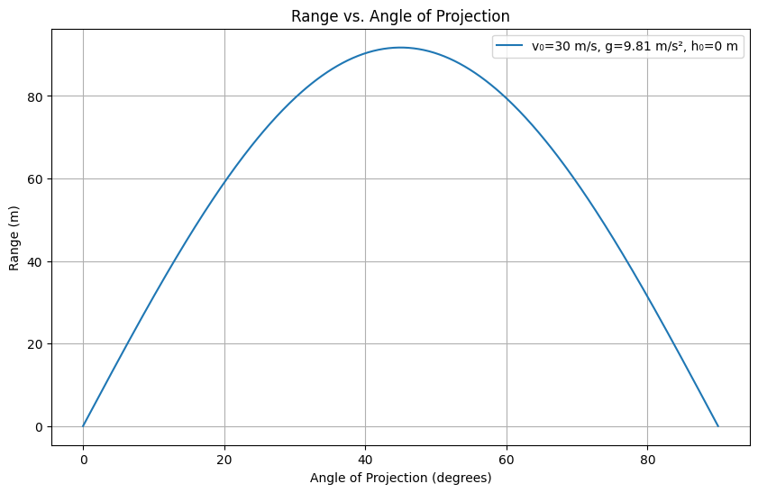

Problem 1
# Theoretical Foundation
Derivation of Projectile Motion from Newton's Laws
We begin by considering a projectile launched with an initial velocity \(v_0\) at an angle \(\theta\) above the horizontal.
- The motion can be decomposed into two perpendicular components:
- Horizontal (x-axis)
- Vertical (y-axis)
Assumptions:
- No air resistance
- Constant gravitational acceleration \(g\)
- Launched from the origin at time \(t = 0\)
1. Equations of Motion
-
Horizontal motion (constant velocity):
-
Acceleration: \(a_x=0\)
-
Velocity: \(v_x=v_0\cos(\theta)\)
-
Displacement: \(\(x(t)=v_0\cos(\theta)\cdot t\)\)
Vertical motion (accelerated motion):
-
Acceleration: \(a_y=-g\)
-
Velocity: \(v_y=v_0\sin(\theta)-gt\)
-
Displacement: \(\(y(t)=v_0\sin(\theta)\cdot t-\frac{1}{2}gt^2\)\)
2. Time of Flight
The projectile hits the ground when \(y(t) = 0\). Solving:
Non-zero solution:
↔ 3. Horizontal Range \(R\)
Substitute the total time of flight into the horizontal displacement:
- This shows that range is maximum when \(\sin(2\theta) = 1\), i.e. \(\theta = 45^\circ\)
4. Effect of Initial Conditions on Range
- Initial Velocity \(v_0\):
- Range is proportional to \(v_0^2\)
- Doubling speed increases range fourfold
- Angle \(\theta\):
- Affects both vertical and horizontal components
- Maximum range at \(\theta = 45^\circ\) (in symmetric conditions)
- Gravitational Acceleration \(g\):
- Inverse relation: higher gravity → shorter range
- Launch Height (not included above):
- Adds vertical displacement
- Increases total time in air → longer range (needs new derivation)
These equations form the idealized model of projectile motion, laying the foundation for further numerical or simulation-based analysis.
Analysis of the Range
1. Mathematical Relationship Between Range and Angle
Using the derived formula from earlier:
Where: - \(R\) is the horizontal range - \(v_0\) is the initial velocity - \(\theta\) is the launch angle - \(g\) is the acceleration due to gravity
Key Observations:
-
Range depends non-linearly on \(θ\) through \(sin(2θ)\).
-
The function \(sin(2θ)\) reaches its maximum value of 1 when \(2θ=90°\).
-
Therefore, the maximum range occurs at: \(\(\boxed{θ=45°}\)\)
2. Effect of Initial Velocity (\(v_0\))
From the formula:
- Doubling \(v_0\) quadruples the range.
- Plotting range vs. angle for different velocities shifts the amplitude of the curve but not the position of the peak.
3. Effect of Gravitational Acceleration (\(g\))
- Range is inversely proportional to \(g\):
- Lower gravity (e.g., on the Moon) results in a longer range.
- Higher gravity (e.g., on Jupiter) produces a shorter range.
4. Launch Height (Advanced)
When the projectile is launched from a height \(h>0\), total time of flight increases.
The vertical displacement becomes:
To find time of flight \(t_f\), solve:
This is a quadratic in \(t_f\):
Solve for \(t_f\) using the quadratic formula:
Then calculate range:
Note:
- Range increases with height.
- The angle for maximum range no longer remains 45° when launching from a height.
Summary
| Parameter | Effect on Range |
|---|---|
| Initial Velocity \(v_0\) | Quadratic increase (\(\propto v_0^2\)) |
| Launch Angle \(\theta\) | Max at \(45^\circ\) (flat launch) |
| Gravity \(g\) | Inversely proportional |
| Launch Height \(h\) | Increases range, changes optimal angle |
This analysis provides a full picture of how the range responds to varying parameters in ideal and slightly more realistic conditions.
Practical Applications of Projectile Motion
1. Real-World Situations Involving Projectile Motion
Projectile motion is observed in various natural and engineered systems:
- Sports:
- A soccer ball, basketball, or javelin follows a projectile path after being launched.
-
The initial velocity and launch angle determine whether the ball reaches the goal or basket.
-
Engineering:
- Water fountains or fire hoses arc based on launch parameters.
-
Ballistics in defense and aerospace engineering heavily depend on accurate projectile modeling.
-
Astrophysics:
- Space missions use orbital mechanics — an extension of projectile motion under gravity.
- Launching a probe involves solving similar equations in non-Earth gravity fields.
2. Effects of Terrain, Drag, and Wind
a. Uneven Terrain
When projectiles land on non-flat surfaces, the simple range formula no longer applies.
- Suppose the landing height is different from the launch height \(h_0\), then total time of flight \(t_f\) must be found by solving:
- Final range becomes:
- Requires solving a quadratic equation for \(t_f\) and using it in range computation.
b. Air Resistance (Drag)
Real trajectories are affected by drag force proportional to velocity:
Where: - \(F_d\) is the drag force, - \(k\) is a constant depending on air density and shape, - \(v\) is velocity.
This leads to nonlinear differential equations:
-
In horizontal direction:
\(\(m\frac{dv_x}{dt}=-kv_x\)\) -
In vertical direction:
\(\(m\frac{dv_y}{dt}=-mg-kv_y\)\)
These must be solved numerically using techniques like Euler’s method or Runge-Kutta.
c. Wind
Wind introduces additional velocity components: - Tailwind increases range. - Headwind decreases range. - Crosswind changes the direction of the projectile, affecting accuracy.
Effective horizontal velocity becomes:
3. Adapting the Model
To make the model more realistic:
- Include drag:
- Use numerical simulation (e.g., Runge-Kutta) to solve motion with air resistance.
- Include wind:
- Modify initial velocity vector to account for wind speed and direction.
- Simulate terrain:
- Adjust impact height based on known terrain elevation data.
Summary
| Realistic Factor | Effect on Range | Modeling Approach |
|---|---|---|
| Uneven Terrain | Alters time of flight | Quadratic equation with height offset |
| Air Resistance | Shortens range significantly | Numerical solution of ODEs |
| Wind | Alters path and accuracy | Adjust velocity components |
By expanding our model, we bridge the gap between ideal physics and real-world scenarios, increasing the accuracy and relevance of projectile analysis.
Implementation: Computational Simulation of Projectile Motion
This section provides a Python implementation to simulate projectile motion, analyze the range as a function of angle, and visualize the effects of varying initial conditions.
Objective
- Simulate projectile motion under ideal conditions.
- Plot Range vs. Angle of Projection.
- Allow the user to vary:
- Initial velocity \(v_0\)
- Gravitational acceleration \(g\)
- Initial height \(h_0\)
Python Code (Jupyter Notebook Compatible)

import numpy as np
import matplotlib.pyplot as plt
# --- Function to calculate range ---
def calculate_range(v0, angle_deg, g=9.81, h0=0):
angle_rad = np.radians(angle_deg)
v0x = v0 * np.cos(angle_rad)
v0y = v0 * np.sin(angle_rad)
if h0 == 0:
# Flat terrain (simplified range formula)
R = (v0**2 * np.sin(2 * angle_rad)) / g
else:
# Non-zero launch height, solve for time of flight and range
t_flight = (v0y + np.sqrt(v0y**2 + 2 * g * h0)) / g
R = v0x * t_flight
return R
# --- Function to simulate and plot ---
def plot_range_vs_angle(v0, g=9.81, h0=0):
angles = np.linspace(0, 90, 500)
ranges = [calculate_range(v0, angle, g, h0) for angle in angles]
plt.figure(figsize=(10, 6))
plt.plot(angles, ranges, label=f'v₀={v0} m/s, g={g} m/s², h₀={h0} m')
plt.xlabel('Angle of Projection (degrees)')
plt.ylabel('Range (m)')
plt.title('Range vs. Angle of Projection')
plt.grid(True)
plt.legend()
plt.show()
# --- Example usage ---
# Modify these parameters to explore different conditions
initial_velocity = 30 # m/s
gravity = 9.81 # m/s²
initial_height = 0 # m
plot_range_vs_angle(initial_velocity, gravity, initial_height)